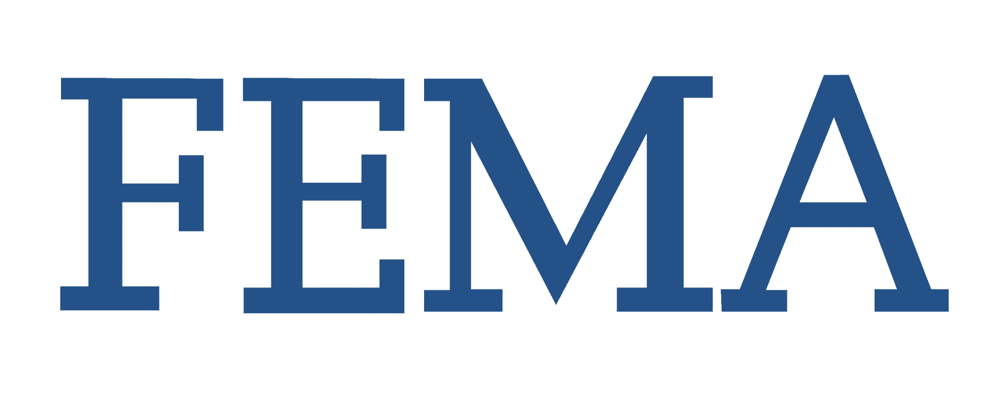
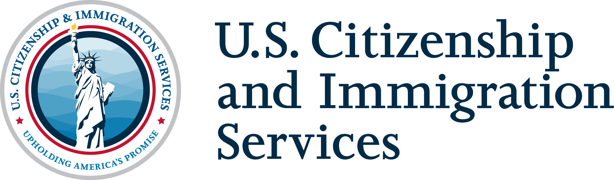
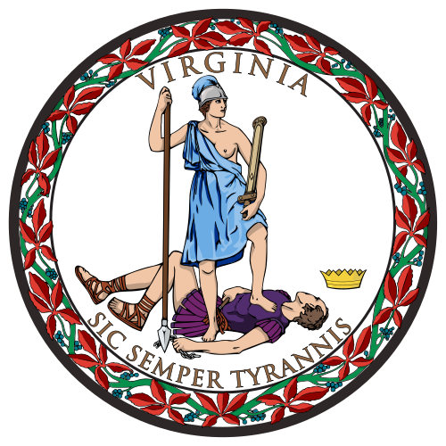
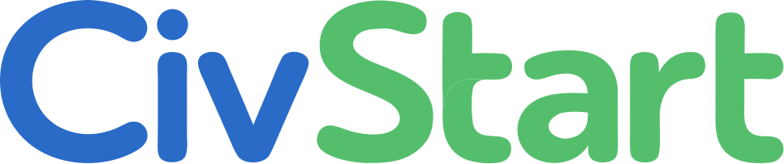
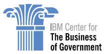
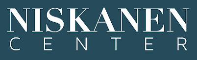

Let’s build a better government, together.
Hi, I'm Mark. For over ten years, I’ve partnered with federal, state, and local governments to adopt modern ways of working and deliver great public services that actually work for people.

Hi, I'm Mark. For over ten years, I’ve partnered with federal, state, and local governments to adopt modern ways of working and deliver great public services that actually work for people.







For executives and leaders who want to build modern tech capacity to deliver on their policy priorities.
For mission-driven groups looking to build communities, tell stories, or understand what makes government work better.
For modern tech and design companies that need an independent technical eye, an experienced team lead, an expert facilitator, or a strategic partner.
For coordinators looking for a speaker, emcee, or workshop leader to keep publicly-minded audiences engaged.
If a critical public service process or project isn't working right, I’ll collaborate with leaders and practitioners across your organization to figure out root causes. I'll work with your executives, users, engineers, and contractors to give you a clear roadmap to turn things around.
If you need to align a group of people around a concept, vision, or problem, I'll work with you to bring those people together. I'll design and host immersive, interactive, small-group sessions to help your leadership team align on goals, address internal friction, and build your vision for the future.
If you want to build or improve a professional network, a fellowship program, or a mentorship system, I can help. I'll build the community structures, automate the behind-the-scenes software, encourage peer support, and set up a culture of inclusion and action.
Sometimes you just need an experienced public sector technologist on your side for a few hours a week. Whether you need a leader in an acting position or short-term support to solve a particular problem, I provide independent strategic advice and technical reviews without the overhead of a full-time hire.
How I've gathered leaders and passionate practitioners across sectors to build more modern governments.
Gathering leaders. I’ve brought together hundreds of leaders from across sectors – public, private, nonprofit, academic, and philanthropic – to lean on each other, learn from each other, and build better governments together. I’ve produced and hosted conferences nationwide with hundreds of attendees, including the For The Public and State of GovTech conferences. I have curated intimate spaces for dozens of executives to learn and build new best practices, such as the Federal Innovation Council and Modern Government Leaders networks at the Partnership for Public Service.
Building communities. I’ve built purpose-led communities and convenings that have created lasting and impactful relationships for people and organizations. Through my work with Technologists for the Public Good, I built and managed a community of over a thousand public interest technologists, including sub-communities via mentorship programs and leadership development programs that supported hundreds of rising leaders.
Creating collective impact. I’ve created dedicated spaces for some of the most impactful and active leaders across the civic tech space to gather and build the field. As the organizer and host of the For The People Exchange, I brought together over a hundred leaders from across the most impactful organizations in the field to work together on joint initiatives and make progress on joint goals, including multiple cross-organization programs, the identification and recruitment of multiple high-performing staff and executives, and the development of field-wide resources and strategies.
My published works pushing the field of public interest technology forward.
Building strategies. I’ve developed organizational visions and strategies that have defined the way forward. I facilitated staff across Code for America to build their principles for a human-centered government. I gathered leaders from across organizations to create a joint field strategy for improving tech talent in government. I coordinated with community members to build Technologists for the Public Good’s advocacy priorities.
Defining best practices. As a steward of the civic tech community, I’ve gathered together research and lessons learned to share best practices. During my fellowship at the Harvard Kennedy School, I produced a report on in-house tech talent in governments. At the Partnership for Public Service, I developed and educated federal leaders on a set of modern ways of working. At New America, I developed guidance for building and reusing open source tools in government. I’ve partnered with the IBM Center for The Business of Government to produce reports on cloud computing and an upcoming report on human-centered design in government.
Telling engaging stories. I believe we learn best from stories, and have put pen to paper to help share more stories of government innovation. In partnership with the Niskanen Center, I published a detailed retelling and analysis of the FBI’s $1 billion tech failure. At the Code for America Summit in 2023, I led my team at the Partnership for Public Service in sharing qualitative and quantitative lessons learned in effective tech hiring practices. I produce in-depth explainer videos on YouTube diving into past and present stories of government modernization initiatives. I highlighted community members from across the Technologists for the Public Good community to elevate their stories and champion their work.
My roles in building internal capacity for modern tech across levels of government.
Supporting tech contracts. I’ve supported over $1 billion in technology contracts as an evaluator of technical competencies of vendors and contractors. At the Department of Homeland Security, I led a team of over a dozen experienced technologists in evaluating over one hundred contractors in live evaluations in the largest-to-date federal software development services contract. At the U.S. Citizenship and Immigration Services, I was the sole technical evaluator for the software development contract that built the nation’s back-end immigration system. At the City and County of San Francisco, I supported the development of its first modern, agile software contract to develop their award-winning affordable housing system.
Educating governments on modern ways of working. Training government leaders on modern tech delivery is critical to expanding government capacity. At the City and County of San Francisco, I trained civil servants on agile development practices. I partnered with the Commonwealth of Virginia to identify and outline key areas for improvement in the management of software systems. During my time at the U.S. Digital Service, I presented to procurement specialists on modern technology practices to support the evolution of software contracting practices.
Recruiting and hiring tech talent. Building government’s tech capacity requires hiring and empowering great people. While at the U.S. Digital Service, I recruited and interviewed over a hundred technologists to join public service, and I developed the organization’s onboarding program to enable new hires to ramp up rapidly. I worked with Tech Talent Project to recruit senior executives from across the private sector into critical positions across government. During my time at Technologists for the Public Good, I supported hundreds of aspiring civic technologists as they navigated job searches, provided guidance at virtual career fairs, and connected organizations and talent in purpose-built spaces.